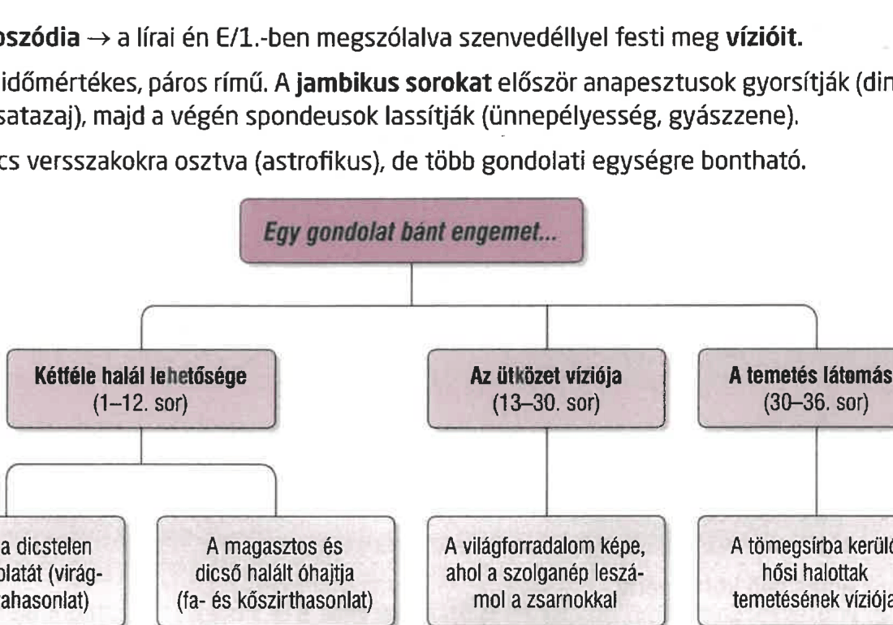

Petőfi Sándor forradalmi látomásköltészete
FELELETVÁZLAT
- Petőfi 1846 tavaszán kapcsolódik be a politikai közéletbe.
- Látomásköltészetének alapja az a magára vett szerep, hogy a költő a népet vezeti, jós, látnok és vátesz.
- Célja a világszabadság elérése, de ezért a jövőben valósulhat meg a nagy átalakulás.
- A költő vezetőnek érzi magát, a társadalmi egyenlőség felé kívánja vezetni a népet.
- Látomásverseiben gyakoriak a bibliai motívumok.
A XIX. század költői
- A költő próféta, népvezér, Mózeshez hasonlóan Kánaánba, az ígéret földjére vezeti a népet.
- Nemcsak saját magának, hanem kortársainak is feladatot ad: meg kell szólalniuk a közösség érdekében.
- A vers célja a meggyőzés és annak beláttatása, hogy a társadalmi boldogság elérésében fontos szerepe van a költőnek.
- A felszólító mondatok, kérdések, ismétlések, halmozások és ellentétek mind a váteszszerepet erősítik.
Egy gondolat bánt engemet...
- Az 1846-ban írt költemény egyszerre látomásvers és az egyéni sors, illetve a közösségi érdek összekapcsolása.
- A mű monológ, amely az áldott világszabadság eszméjét hirdeti, vállalva érte a harcot és a halált is.
- Időmértékes, páros rímű, a jambikus sorokat az anapesztusok gyorsítják.
- A vers gondolati íve a hosszú, eseménytelen élettől az önként vállalt, közösségi célért hozott hősi halálig jut el.
- A záró szókapcsolat, a „szent világszabadság” azt hangsúlyozza, hogy a megvalósulás érdekében semmilyen áldozat nem hiábavaló.
